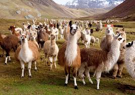

Ламы – одомашненные животные из Южной Америки, принадлежащие к тому же семейству, что и верблюды. ... Ступни узкие, пальцы ног более разделены, нежели у верблюдов, на каждом имеется мозолистая подушечка. У лам очень короткий хвост, а шерсть длинная, мягкая и на удивление – чистая.
Ламы - это травоядные животные. Они питаются разными растениями, листьями, побегами, мхами и солонцами. В качестве угощения им можно давать морковь, яблоки и капусту. Если лама живет не в дикой природе, а с людьми, то зимой, когда травы нет, им дают сено.
